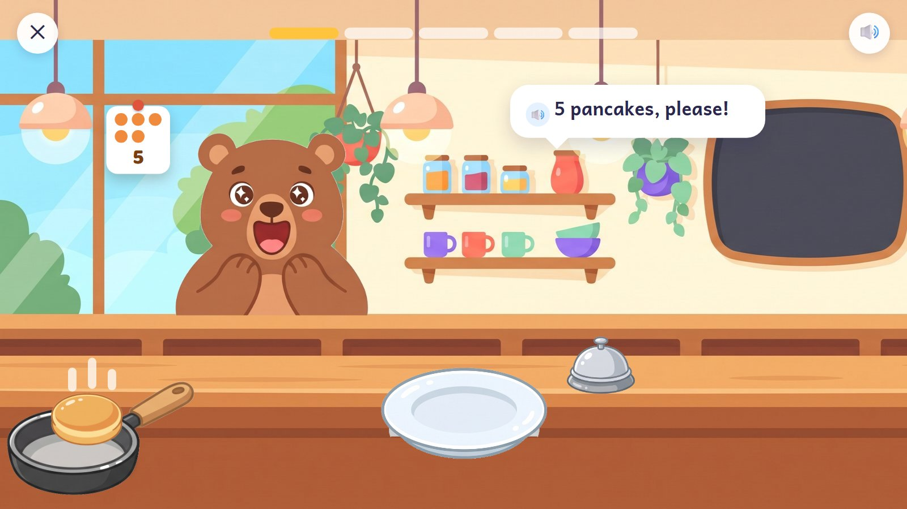
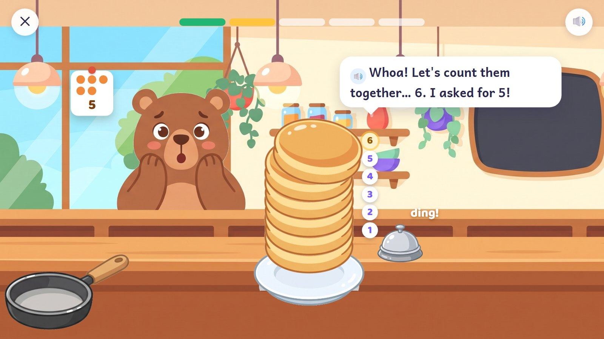
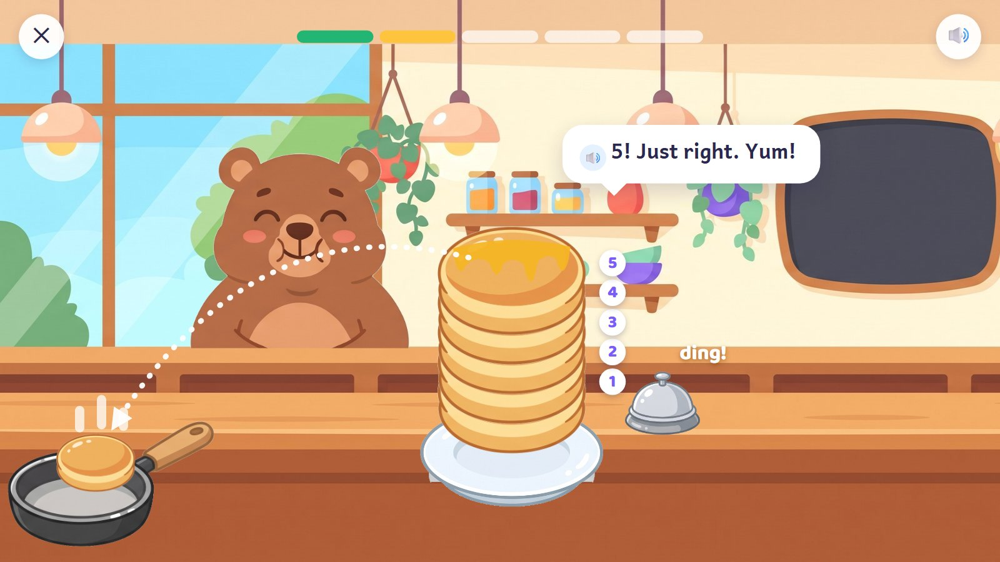
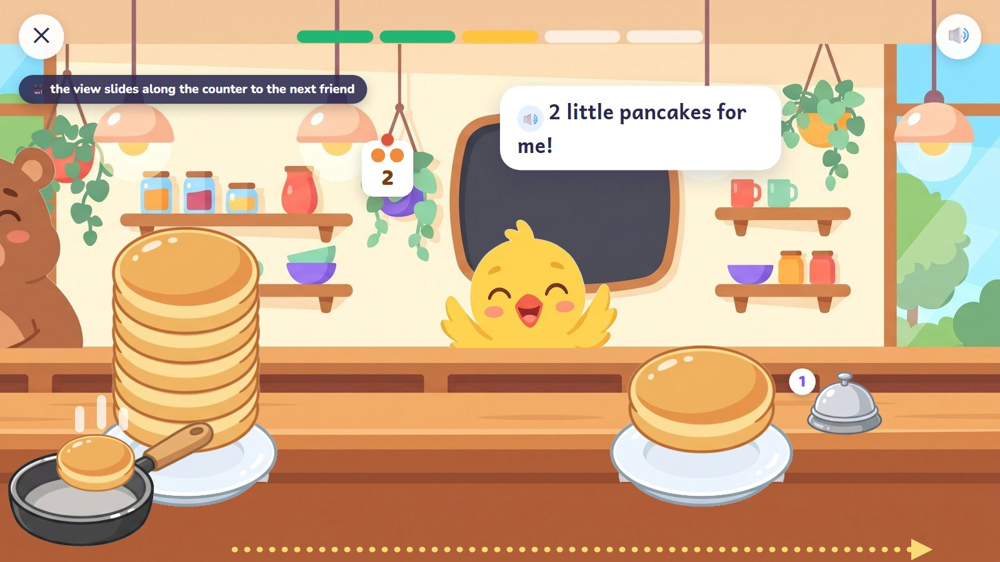
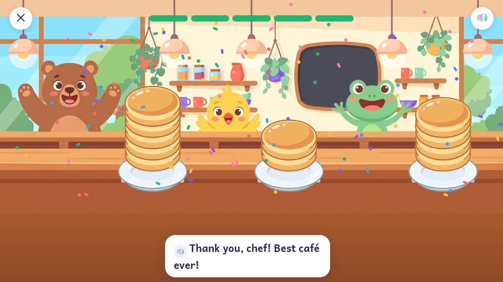

Pancake Café
The child is the cook. Friends stand along a long café counter, each holding up an order: dots (and the digit once they know it), said aloud too. Tap the pan and one pancake flips onto the plate, counted aloud. Ring the bell when the stack is right. Counting OUT a number, and knowing when to stop, is the first big counting skill.
Pre-K · ages 3–5 E01 Touch and count (counting out)
Skill: Count out a number of things, 1 to 10 (then 11–20 with a full plate of ten and some more). One activity is 5 rounds, about 90–150 seconds.
🎉 The fun
Flipping pancakes, a stack that wobbles when it is too tall, honey poured on top, a friend who eats happily.
🎥 The view
Sideways along the counter: when an order is done, the view slides on to the next friend.
🎆 The finale
The whole counter at once, every friend with their stack, confetti.
Six moments

1The order
The bear holds up 5 dots (and the 5) and says it. A see-through hand shows one tap on the pan, on a practice order. The bell is shown once too.
🔊 "5 pancakes, please!"
Behind the scenes: The bell is always there and big. It never lights up by itself at the right moment: deciding when to stop is the child's job.

2Flip!
Each tap flips one pancake up onto the plate. Each one gets its number and the voice counts with it.
🔊 "Four!"
Behind the scenes: The bear's eyes follow each pancake. The pancakes stay a little apart so each one can be counted.

3A wrong try
Six pancakes, and the bell rung. The stack wobbles, the bear looks surprised, and the pancakes count themselves. Nothing is taken away.
🔊 "Whoa! Let's count them together… 6. I asked for 5!"
Behind the scenes: No red and no "wrong": the bear's surprise is the tip. The extra pancake stays until the child moves it.

4The child fixes it
The child taps the top pancake and it hops back into the pan. Five. Ding! Honey pours over the stack and the bear eats.
🔊 "5! Just right. Yum!"
Behind the scenes: Done on the second try: the order is finished, but there is no first-try star for it.

5On to the next friend
The view slides along the counter to the chick, who holds up 2 dots. The bear is still eating at the side.
🔊 "2 little pancakes for me!"
Behind the scenes: The slide comes after the order is finished and takes under a second. The next friend is already waiting.

6The whole café
After five orders: the whole counter at once, every friend with their stack.
🔊 "Thank you, chef! Best café ever!"
Behind the scenes: Two or three seconds of celebration, then Continue.
The frames are mock-ups: Gemini's drawings (backgrounds, friends, things) and shapes and numbers drawn by code, put together as the app would at run time. In the app everything moves; here it stands still.
How it changes
| What changes | Range |
|---|---|
| How many | 1–3, then 1–5, 1–10, then 11–20 (a full plate of ten and some more) |
| The order | dots in a dice pattern, dots in a row, dots with the digit, the digit alone, or only said aloud |
| What is served | pancakes, scoops of ice cream, blueberries on top (food never has a face) |
| Friends | bear, chick, frog, penguin, fox, owl |
| Planned activities | E01: 100 planned cards; "counting out and stopping" is now its own objective |
From a model to a word problem
| Step | In this activity |
|---|---|
| 1. See it | The plate has 5 marked spaces; each pancake fills one, so the child sees how many are still missing. |
| 2. Fill one part | 3 pancakes are already on. The order says 5. |
| 3. On your own | A plain plate, any order up to 10. |
| 4. Check it | "The frog cooked this order. Is it 4?" Count it, then fix it. |
| 5. Word problem | "The bear wants 2 and the chick wants 3. How many pancakes do we cook?" |
Wrong answers we expect, and what happens
| Mistake | Looks like | What happens (never red, never "wrong") |
|---|---|---|
| Too many | counting goes on past the number | the stack wobbles; count together; the child sends the extra back |
| Too few | the bell is rung early | "Is that all of them?" and the friend counts with the child |
| Counted twice | one pancake counted two times | each pancake shows its own number |
| The last number is not "how many" | counts 1 to 5 but says "3" | the friend asks: "So how many is that?" |
What it needs
- The café, drawn by Gemini; the counter drawn again in front, so friends stand behind it
- Pancake, plate, pan, honey and bell pieces (drawn)
- The friends in four poses each: hungry, eating, cheering, surprised (drawn)
- Voice: orders 1–20, counting 1–20, 4 tips, 6 kinds of praise
Test robot: Reads the order from the question (never from the answer on screen), taps the pan exactly that many times and rings the bell. Once a round it adds one too many, to check the tip.